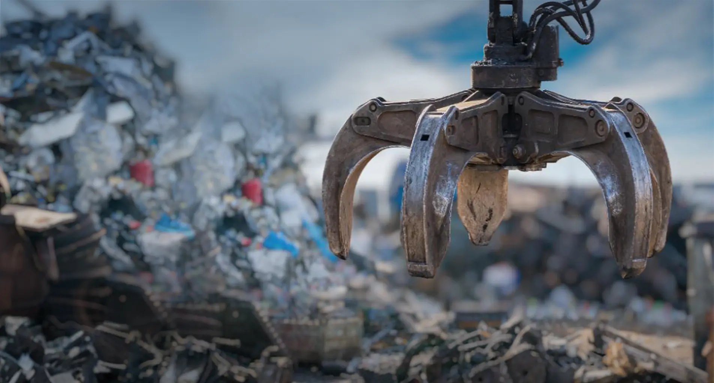
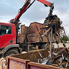
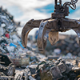
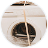

Направления деятельности
Ломозаготовительный дивизион

География присутствия
Одна из крупнейших ломозаготовительных сетей в России
Карта
Список
Коды регионов субъектов РФ
78
78, Санкт-Петербург
Акрон Скрап Северозапад
10
10, Республика Карелия
Акрон Скрап Северозапад
39
39, Калининградская область
Акрон Скрап Металл
47
47, Ленинградская область
Акрон Скрап Северозапад
53
53, Новгородская область
Акрон Скрап Северозапад
35
35, Вологодская область
Акрон Скрап Северозапад
29
29, Архангельская область
Акрон Скрап Северозапад
24
24, Красноярский край
Акрон Скрап Красноярск
60
60, Псковская область
Акрон Скрап Северозапад
69
69, Тверская область
Акрон Скрап Металл
76
76, Ярославская область
Акрон Скрап Металл
37
37, Ивановская область
Акрон Скрап Нижний Новгород
44
44, Костромская область
Акрон Скрап Металл
12
12, Республика Марий Эл
Акрон Скрап Нижний Новгород
43
43, Кировская область
Акрон Скрап Нижний Новгород
59
59, Пермский край
Акрон Скрап Урал
86
86, Ханты-Мансийский автономный округ — Югра
Глобал Металл
72
72, Тюменская область
Акрон Скрап Урал
70
70, Томская область
Акрон Скрап Новосибирск
Глобал Металл
42
42, Кемеровская область
Акрон Скрап Новосибирск
38
38, Иркутская область
Акрон Скрап Красноярск
27
27, Хабаровский край
Акрон Скрап Хабаровск
67
67, Смоленская область
Акрон Скрап Металл
40
40, Калужская область
Акрон Скрап Металл
50
50, Московская область
Петромакс
Акрон Скрап МО
Вторалюминпродукт
Акрон Скрап Металл
77
77, Москва
Акрон Скрап Металл
Вторалюминпродукт
33
33, Владимирская область
Акрон Скрап Нижний Новгород
52
52, Нижегородская область
Акрон Скрап Нижний Новгород
21
21, Чувашская Республика
Акрон Скрап Нижний Новгород
16
16, Республика Татарстан
Акрон Скрап Самара
Акрон Скрап Нижний Новгород
18
18, Удмуртская Республика
Акрон Скрап Самара
66
66, Свердловская область
Акрон Скрап Урал
45
45, Курганская область
Акрон Скрап Урал
54
54, Новосибирская область
Акрон Скрап Новосибирск
19
19, Республика Хакасия
Акрон Скрап Новосибирск
79
79, Еврейская автономная область
Акрон Скрап Хабаровск
25
25, Приморский Край
Акрон Скрап Хабаровск
32
32, Брянская область
Акрон Скрап Металл
46
46, Курская область
Акрон Скрап Металл
57
57, Орловская область
Акрон Скрап Металл
71
71, Тульская область
Акрон Скрап Металл
13
13, Республика Мордовия
Акрон Скрап Нижний Новгород
73
73, Ульяновская область
Глобал Металл
Акрон Металл Ресурс
63
63, Самарская область
Акрон Скрап Самара
Акрон Металл Ресурс
Тосна
Глобал Металл
02
02, Республика Башкортостан
Акрон Скрап Южный Урал
Акрон Скрап Урал
Акрон Скрап Самара
74
74, Челябинская область
Акрон Скрап Урал
55
55, Омская область
Акрон Скрап Новосибирск
22
22, Алтайский край
Акрон Скрап Новосибирск
31
31, Белгородская область
Акрон Скрап Металл
48
48, Липецкая область
Акрон Скрап Ростов
Акрон Скрап Металл
68
68, Тамбовская область
Акрон Скрап Металл
58
58, Пензенская область
Глобал Металл
64
64, Саратовская область
Глобал Металл
Акрон Скрап Самара
56
56, Оренбургская область
Акрон Скрап Южный Урал
Акрон Скрап Самара
04
04, Республика Алтай
Акрон Скрап Новосибирск
36
36, Воронежская область
Акрон Скрап Ростов
Акрон Скрап Металл
34
34, Волгоградская область
Акрон Скрап Ростов
61
61, Ростовская область
Акрон Скрап Ростов
30
30, Астраханская область
Акрон Скрап Ростов
23
23, Краснодарский край
Акрон Скрап Ростов
26
26, Ставропольский край
Акрон Скрап Ростов
05
05, Республика Дагестан
Акрон Скрап Ростов
01
01, Республика Адыгея
Акрон Скрап Ростов
15
15, Республика Северная Осетия — Алания
Акрон Скрап Ростов
07
07, Кабардино-Балкарская Республика
Акрон Скрап Ростов
01 - Коды регионов субъектов РФ
Алтайский край
Акрон Скрап Новосибирск
Архангельская область
Акрон Скрап Северозапад
Астраханская область
Акрон Скрап Ростов
Белгородская область
Акрон Скрап Металл
Брянская область
Акрон Скрап Металл
Владимирская область
Акрон Скрап Нижний Новгород
Волгоградская область
Акрон Скрап Ростов
Вологодская область
Акрон Скрап Северозапад
Воронежская область
Акрон Скрап Ростов
Акрон Скрап Металл
Еврейская автономная область
Акрон Скрап Хабаровск
Ивановская область
Акрон Скрап Нижний Новгород
Иркутская область
Акрон Скрап Красноярск
Кабардино-Балкарская Республика
Акрон Скрап Ростов
Калининградская область
Акрон Скрап Металл
Калужская область
Акрон Скрап Металл
Кемеровская область
Акрон Скрап Новосибирск
Кировская область
Акрон Скрап Нижний Новгород
Костромская область
Акрон Скрап Металл
Краснодарский край
Акрон Скрап Ростов
Красноярский край
Акрон Скрап Красноярск
Курганская область
Акрон Скрап Урал
Курская область
Акрон Скрап Металл
Ленинградская область
Акрон Скрап Северозапад
Липецкая область
Акрон Скрап Ростов
Акрон Скрап Металл
Москва
Акрон Скрап Металл
Вторалюминпродукт
Московская область
Петромакс
Акрон Скрап МО
Вторалюминпродукт
Акрон Скрап Металл
Нижегородская область
Акрон Скрап Нижний Новгород
Новгородская область
Акрон Скрап Северозапад
Новосибирская область
Акрон Скрап Новосибирск
Омская область
Акрон Скрап Новосибирск
Оренбургская область
Акрон Скрап Южный Урал
Акрон Скрап Самара
Орловская область
Акрон Скрап Металл
Пензенская область
Глобал Металл
Пермский край
Акрон Скрап Урал
Приморский Край
Акрон Скрап Хабаровск
Псковская область
Акрон Скрап Северозапад
Республика Адыгея
Акрон Скрап Ростов
Республика Алтай
Акрон Скрап Новосибирск
Республика Башкортостан
Акрон Скрап Южный Урал
Акрон Скрап Урал
Акрон Скрап Самара
Республика Дагестан
Акрон Скрап Ростов
Республика Карелия
Акрон Скрап Северозапад
Республика Марий Эл
Акрон Скрап Нижний Новгород
Республика Мордовия
Акрон Скрап Нижний Новгород
Республика Северная Осетия — Алания
Акрон Скрап Ростов
Республика Татарстан
Акрон Скрап Самара
Акрон Скрап Нижний Новгород
Республика Хакасия
Акрон Скрап Новосибирск
Ростовская область
Акрон Скрап Ростов
Самарская область
Акрон Скрап Самара
Акрон Металл Ресурс
Тосна
Глобал Металл
Санкт-Петербург
Акрон Скрап Северозапад
Саратовская область
Глобал Металл
Акрон Скрап Самара
Свердловская область
Акрон Скрап Урал
Смоленская область
Акрон Скрап Металл
Ставропольский край
Акрон Скрап Ростов
Тамбовская область
Акрон Скрап Металл
Тверская область
Акрон Скрап Металл
Томская область
Акрон Скрап Новосибирск
Глобал Металл
Тульская область
Акрон Скрап Металл
Тюменская область
Акрон Скрап Урал
Удмуртская Республика
Акрон Скрап Самара
Ульяновская область
Глобал Металл
Акрон Металл Ресурс
Хабаровский край
Акрон Скрап Хабаровск
Ханты-Мансийский автономный округ — Югра
Глобал Металл
Челябинская область
Акрон Скрап Урал
Чувашская Республика
Акрон Скрап Нижний Новгород
Ярославская область
Акрон Скрап Металл
Кол-во регионов присутствия
Подразделений
Годовой объем заготовки лома черных металлов / тонн
Годовой объем заготовки лома цветных металлов / тонн
Акрон Экология
Совокупность экологических проектов, реализуемых Акрон Холдингом
с целью организации сбора и последующей утилизации вторичного
сырья различных фракций. Компания активно развивает
стратегические направления:
Экобокс
Развитие собственных сетей приемных пунктов по сбору вторсырья
у населения — «Экобоксов» и участие в проекте МегаБак
ОЭЭО
Реализация проекта по созданию и расширению федеральной сети
центров переработки отходов электрического и электронного
оборудования
РОП
Программа расширенной ответственности производителя (РОП)
Услуги
Основные услуги

Вывоз металлолома

Прием металлолома, РЗМ, РЭЛ
Авторециклинг и утилизация всех видов транспорта

Утилизация бытовой техники, промышленного оборудования,
оргтехники, инструментов, сетевого оборудования,
медицинского оборудования
Демонтаж металлоконструкций
Безопасное уничтожение данных
Сдайте лом цветных или черных металлов по выгодной цене